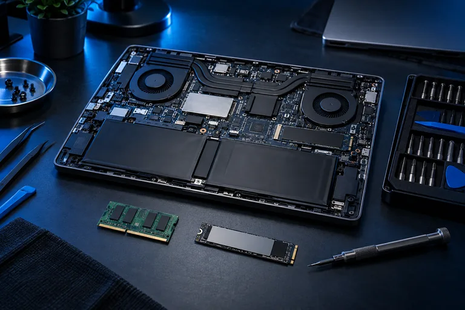

01
Software Development
Custom software, websites, business systems, databases and digital solutions.
Discuss your needsYOUR TECHNOLOGY. CONNECTED.
Software, IT support, cybersecurity, CCTV, networking, repairs, maintenance and ICT supplies — all from one trusted technology partner.
Based in Nairobi • Serving clients across Kenya
01 / OUR SERVICES
Integrated technology services and supplies to help you work smarter, stay secure and keep your systems running.
Custom software, websites, business systems, databases and digital solutions.
Discuss your needsTechnical support, system configuration, troubleshooting, installations and IT guidance.
Get IT SupportSecurity solutions, system protection, data protection, backups and security best practices.
Secure Your BusinessCCTV installation, configuration, maintenance and security monitoring solutions.
Plan Your SecurityLAN/Wi-Fi installation, router and switch configuration, structured cabling and network maintenance.
Plan Your Network
06Desktop and laptop diagnostics, repairs, upgrades, operating system installation and preventive maintenance.
Repair Your DeviceComputers, laptops, printers, storage devices, networking equipment, cables, peripherals and accessories.
Request EquipmentOffice stationery, printing paper, files, toners, cartridges and other office consumables.
Request SuppliesCONNECTED THINKING. COMPLETE SUPPORT.
From setting up your first computer to developing business software, securing your network and maintaining your technology infrastructure, PrimeLink Technologies provides the solutions and technical support you need under one roof.
From your first setup to your next step.
02 / ABOUT PRIMELINK
At PrimeLink Technologies, we provide practical and reliable technology solutions for businesses, institutions and individuals. We combine software, infrastructure, security, technical support and ICT supplies to help our clients use technology effectively and confidently.
03 / SOLUTIONS FOR EVERY ENVIRONMENT
Every environment works differently. We bring the right combination of technology, security and support to yours.
BUILT AROUND YOUR ENVIRONMENT
Bring your business systems, devices and network together with practical technology and dependable technical support.
BUILT AROUND YOUR ENVIRONMENT
Equip classrooms and administration with computers, campus Wi-Fi, networking and CCTV designed around your institution.
BUILT AROUND YOUR ENVIRONMENT
Plan your home internet, Wi-Fi coverage and CCTV setup with help choosing and configuring the right equipment.
BUILT AROUND YOUR ENVIRONMENT
Keep your team equipped with computers, printers, reliable connectivity and the supplies that support daily work.
BUILT AROUND YOUR ENVIRONMENT
Connect your shop, look after your devices and plan CCTV coverage for the spaces that matter to your business.
BUILT AROUND YOUR ENVIRONMENT
Plan guest Wi-Fi, staff networks, CCTV and technical support around the needs of your hotel or hospitality business.
BUILT AROUND YOUR ENVIRONMENT
Bring systems, infrastructure and equipment together for institutions, NGOs and organizations with varied operational needs.
BUILT AROUND YOUR ENVIRONMENT
Discuss connectivity options, site requirements and equipment suitable for your remote or rural location in Kenya.
04 / WHY PRIMELINK
Thoughtful solutions. Dependable service.
A partner who sees the whole picture.
Multiple technology services under one roof.
Solutions focused on real business and operational needs.
Technical assistance when you need it.
Security considered across systems, networks and devices.
ICT equipment, accessories and solutions suited to your needs.
Providing services to clients across Kenya.
TECHNOLOGY FOR EVERY AMBITION
Technology that supports everyday operations.
Connected learning and administration.
Practical tools for teams with a mission.
Workspaces equipped to get things done.
A foundation for your next idea.
Reliable tools for focused work.
Support for your personal technology.
05 / WITH YOU AT EVERY STEP
From understanding your needs to keeping everything running, we look after the full journey.
Understand your technology needs.
Design the appropriate solution.
Provide the required equipment and technology.
Configure and deploy the solution.
Protect systems, devices and networks.
Provide ongoing technical assistance.
Keep technology reliable and operational.
LET’S BUILD YOUR NEXT CONNECTION
Tell us what you need and let PrimeLink help you plan, implement and support it. From software and secure networks to CCTV, repairs and ICT supplies, let’s find the right solution.
06 / START A CONVERSATION
Tell us what you have in mind.
We’ll help you work out the next step.